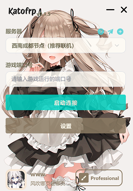

轻巧免费无广告
图形化操作界面
最快最低延迟
轻巧免费无广告
图形化操作界面
最快最低延迟




通过 Katofrp 服务可以做什么？
🤩 与你的好友简单快速开始饥荒联机！！
🤩 Katofrp
还可以帮助您轻松地实现内网穿透，从而远距离其他游戏联机。
🚀 只需房主点击 一键联机
😍
基于Frp实现,它体积轻量但功能强大，支持TCP、UDP等众多协议
我如何创建联机房间？
1.打开饥荒（Don't Starve）游戏，进入要联机的地图。
2.查看要地图的服务器端口号，例如饥荒的地图端口号一般为10889。
3.打开KatoFrp客户端，输入端口号，点击“连接服务器”按钮。
4.将生成的直连代码分享给好友。


我的朋友如何加入？
1.点击复制饥荒游戏的直连代码
2.打开游戏主菜单 摁下键盘左上角的~键，打不开可以切换成英文输入法
3.摁下ctrl+v粘贴代码
4.回车即可加入服务器.